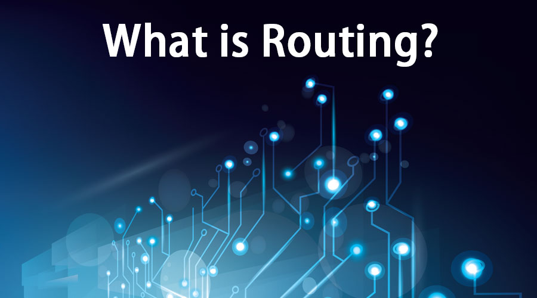
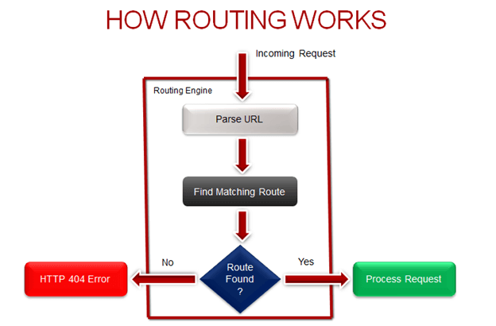

IP Address is an address of your network hardware. It helps in connecting your computer to other devices on your network and all over the world. An IP Address is made up of numbers. It is a bunch of numbers in a hierarchy, has many parts; each number is represented in bits, 32 bits in each part of address each 8-bit part consists of Country/Network, Region/Network, Subnetwork and Device address. It is called IPV4 and it allows 4 billion unique addresses. All devices that are connected to an internet connection must have a uniqueIP Address which means there’s a need of billions of IP Addresses. As number of users are getting increased new system is slowly rising out called IPV6 which allows for 128 bits per address and in result there will be 340 Undecillion unique addresses.

In networking, a packet is a small segment of a larger message. Data sent over computer networks*, such as the Internet, is divided into packets. These packets are then recombined by the computer or device that receives them. Packets are not aware of the route.
Router takes care of routing. Routing is the process that takes care of such sending packets from a host (Sender) from one network to another host (Receiver) who is sitting in a different location across multiple networks. Router uses Transmission Control Protocol to check the inventory of all the packets received. These technologies are all fault tolerant and scalable without interrupting any service.
